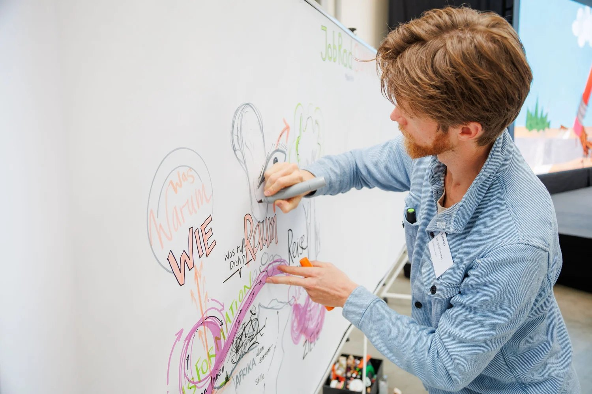
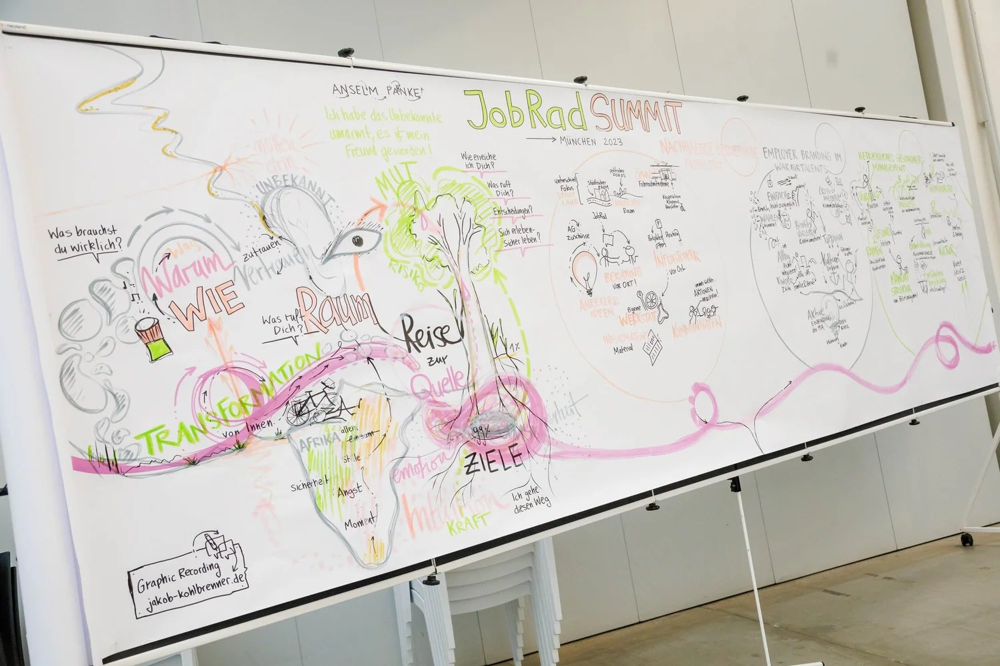

JobRad München
„Visualisierung schafft eine gemeinsame Sprache für Veränderung“
Beim Jobrad Summit in München kamen rund 120 Menschen zusammen, um gemeinsam die Zukunft von Employer Branding und einer nachhaltigen Mobilitätskultur zu gestalten. In verschiedenen Workshops wurden Perspektiven geteilt, Ideen entwickelt und mutige Schritte in Richtung einer neuen Unternehmenskultur gedacht.
Ein besonderer Moment war für mich die Keynote von Anselm Pahnke: Er berichtete von seiner Fahrradtour durch Afrika – eine Reise ins Unbekannte, voller Transformation und Fragen nach dem, was wirklich zählt. Seine Bilder und Geschichten haben mich ebenso wie viele andere tief bewegt.
Meine Rolle war es, das Geschehen sowohl im Graphic Recording als auch im Generative Scribing sichtbar zu machen. Dabei habe ich nicht nur die Inhalte festgehalten, sondern auch das, was zwischen den Worten spürbar war – die Fragen nach Entscheidungen, nach Sinn und nach dem, was wir wirklich suchen.
So entstand ein visuelles Gesamtbild, das die Energie des Tages einfängt und die Teilnehmenden auch über den Summit hinaus inspiriert.



Ein ähnliches Projekt?
Erzähl mir von deiner Veranstaltung. Das Erstgespräch ist kostenfrei.